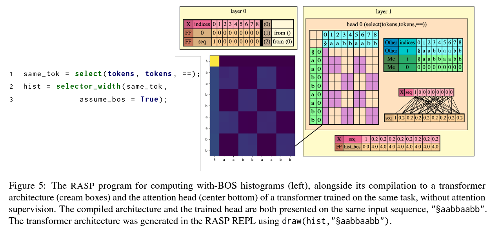
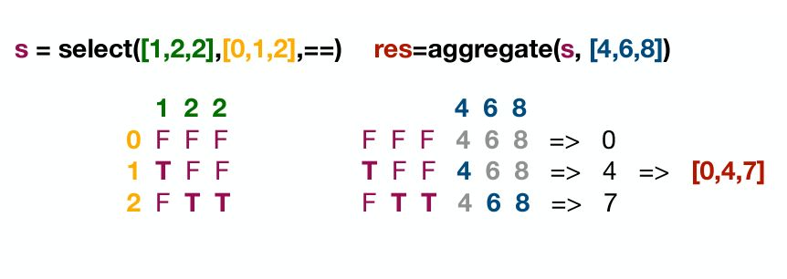
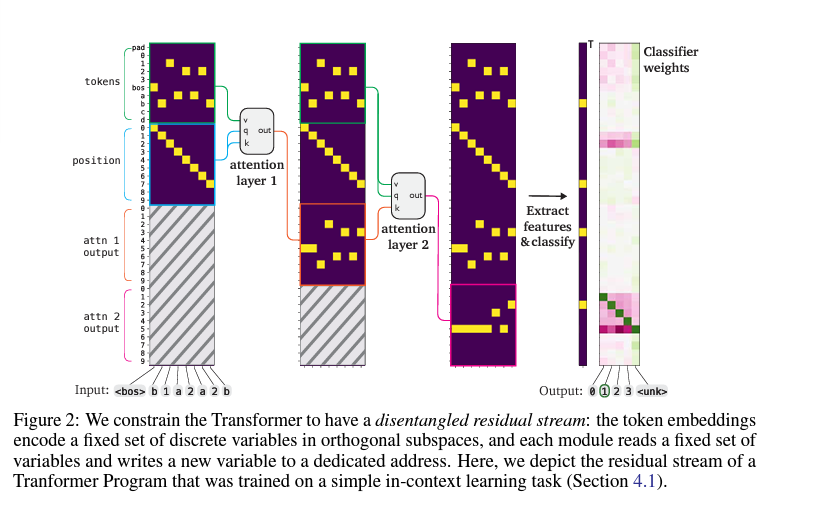

RASP - The Code of Transformers
November 14, 2024 • Bada Kwon, Can Rager
1: What is RASP?
Paper: Thinking Like Transformers by Weiss et al (2021)
The Main Idea: Programming language that has been developed specifically to mimic transformers, which can provide more interpretability.
Authors: Gail Weiss, Yoav Goldberg, Eran Yahav
Gail Weiss has previous experience turning neural networks into a language. He was involved in the use of automata as an abstract computational model for RNNs. This enabled his own work in the analysis of RNNs, such as these papers:
- On the practical computational power of finite precision rnns for language recognition.,
- Extracting automata from recurrent neural networks using queries and counterexamples.
The goal of the paper: Evaluate the relation of RASP to transformers on three fronts:
- ability to upper bound the number of heads and layers required to solve a task
- the tightness of that bound
- its feasibility in a transformer
- whether a sufficiently large transformer can encode a given RASP solution., training several transformers
Why RASP?
Converting AI Models to Languages
From the paper "Thinking Like Transformers" by Weiss et al (2021):
"As the famous saying by Richard Feynman goes, “what I cannot create, I do not understand”Using RASP, we were able to write a program that performs similar logical inferences over input expressions, and then “compile” it to the transformer hardware, defining a sequence of attention and multi-layer perceptron (MLP) operations." Weiss et al (2021)
How Does RASP Work?
RASP Components
RASP is a sequence processing language with two types variables: sequence operations (s-ops) and selectors, and two types of instructions: elementwise and select-aggregate transformations
- Sequence Operations (s-ops): Functions that manipulate sequences, conceptually representing the residual stream in transformers.
- Elementwise Operations: Applied to individual elements in sequences, similar to transformations in MLP layers. Fully connected layer = element-wise operation in a sequence
- Selectors and Aggregate Operations: These operations approximate attention mechanisms in transformers, where selectors represent attention patterns, and select-aggregate combinations correspond to attention heads.  
- The select operation takes two sequence operations and a boolean predicate, while the aggregate operation averages the sequence values weighted by a selection matrix.
- The selector_width function calculates, for each position in a sequence, the number of elements selected by a given selector. It essentially measures the "width" of the selection pattern at each position
Experiment summary:
- Task Performance: Transformers trained to replicate RASP solutions were evaluated across tasks like reversal, histogram, sorting, and most-frequent token. The architecture predicted by RASP generally matched the transformer requirements in terms of heads and layers.
- Attention Regularization: The authors trained transformers with supervised attention to mimic RASP attention patterns, achieving high accuracy.
Conclusion
The RASP framework provides a structured way to interpret transformers, offering insights into the architecture required to solve specific tasks.
By converting RASP programs into transformers, and displaying their accurate outputs, the authors showed how RASP programs can represent accurate and structured transformer models.
Bada's opinion
- The paper talks about how RASP can be used to find limitations for transformers seen in this quote: “Finding that RASP helps predict the number of transformer heads and layers needed to solve them. Additionally, we use RASP to shed light on an empirical observation over transformer variants, and find concrete limitations for some “efficient transformers”” Weiss et al (2021)
- This wasn't the most convincing to me though. Of course we'll see limitations in a constrained transformer, so I don't see the enough to convince me that RASP can scale to even more complicated problems which require deeper and more complicated transformers.
2: Understanding Natural Transformers with RASP
Paper: What Algorithms can Transformers Learn? A Study in Length Generalization by Zhou et al (2021)
Authors:
- Paper out of Apple research
- Samy bengio is the Brother of Joshua Bengio - a well known figure in the deep learning community
The authors introduce the RASP-L framework, a restricted version of RASP tailored for transformer architectures. This framework prohibits arbitrary index operations, reflecting inherent transformer limitations, and provides a formal language for analyzing their capabilities.
This paper investigates the expressiveness of transformers using RASP as a boundary and focuses on their ability to length generalize—solving algorithmic tasks with input sequences longer than those encountered during training. The authors propose the RASP-Generalization Conjecture, which states that transformers can successfully length-generalize when three conditions are met: simplicity, realizability, and diversity. Simplicity requires the task to be expressible as a concise RASP-L program; realizability ensures that a single transformer can solve the task across all input lengths; and diversity necessitates that the training data prevent simpler, non-generalizing solutions.
Empirical validation focuses on a counting task, demonstrating that models trained on sequences up to length 50 can generalize to length 100. Performance improves with more diverse training data, aligning with theoretical predictions from the RASP framework.
Thoughts
While the paper is well-structured and provides a formal framework for analyzing transformer capabilities, its contributions are more about offering a language for discussion rather than introducing fundamentally new insights. The RASP framework effectively predicts length generalization behavior, but its theoretical underpinnings lean heavily on existing understandings of transformer limitations. Notable limitations include the simplicity measure’s underdevelopment, restrictive assumptions that confine applicability to toy problems, and a lack of consideration for training dynamics.
3: Comparability
Paper: Learning Transformer Programs by Friedman et al (2021)
The Main Idea:
- Problem: Manual circuit interpretability is hard and requires a lot of manual labour.
- Solution: Constrain the transformer training such that the result is directly convertible to code.
Authors: Dan Friedman, Alexander Wettig, Danqi Chen
Main Experimental Contributions
-
Evaluate Performance: Compare RASP transformers with natural transformers
- Algorithmic Tasks: Tasks introduced in RASP, such as reversing a sequence, generating histograms, and sorting.
- NLP Tasks: Named Entity Recognition (NER) and text classification to evaluate performance on real-world tasks.
- In-context Learning: Tests the model's ability to remember context and retrieve previously seen values.
- Evaluation Metrics: Performance assessed by comparing accuracy on held-out test sets.
- Improve Interpretability: Use established code debugging / analysis tools to understand transformers
RASP transformer - What are the constraints?
RASP-Transformers impose constraints on their weights to ensure a deterministic mapping to programming primitives in RASP (Restricted Access Sequence Processing Language).
- Modules of Transformer Programs:
- Constrain each module from a transformer to implement an interpretable, rule-based mapping between inputs and outputs
-
Categorical attention heads can be decomposed into two operations, corresponding to the select and aggregate operations in RASP:
- select: conditional selection of values based on a predicate
- aggregate: aggregation of values based on a selection matrix
-
Aggregation and Predicate Functions:
- Aggregation functions are used to combine values from different positions in the sequence
- Predicate functions are used to determine which values are selected
- RASP uses a predicate which is a boolean implementing “hard” categorical attention to maintain discrete, rule-based behavior. Maps every combination of key and query to a value in (0, 1)
- They have a Disentangled Residual Stream. The clear separation and manipulation of the variables in the DRS allows for a direct mapping between Transformer components and RASP primitives. 
- Optimization with discrete values
- RASP transformers use Gumbel-Softmax relaxation for optimizing the categorical choices made by attention heads allowing for discrete sampling and smoothing during training.
- Over the course of training, the "temperature" parameter of the Gumbel-Softmax distribution is gradually reduced. As the temperature approaches zero, the samples from the Gumbel-Softmax distribution become closer to one-hot samples, effectively making the weights more discrete
- For math details, refer to the paper: Friedman et al (2021)
RASP transformer --- Natural transformer
- Attention heads with specific input and output variable assignments can be directly translated into RASP's "select" and "aggregate" operations, which perform conditional selection and aggregation of values based on specific criteria.
- Feed-forward layers can be mapped to RASP's element-wise operations, allowing for more complex computations on the variables
- As discussed in the first section, the RASP transformer is designed to be interpretable and directly convertible to code, providing a clear mapping between the transformer's components and the RASP primitives.
RASP-Transformers are well-suited for tasks where transparency and explainability are crucial.
- algorithmic problem-solving
- natural language processing
Conclusion
The paper's conclusion was: “Transformer Programs can learn effective solutions to a variety of algorithmic tasks”Friedman et al (2021)
- Performance: Transformer Programs achieve competitive performance on synthetic algorithmic tasks and show moderate success on NLP tasks.
-
Interpretability:
- Successfully converts models into discrete Python code representing each attention head as predicate functions. This allows for a more interpretable and structured understanding of the model's behavior.
- Demonstrates that the programs can be analyzed using conventional debugging tools, identifying the "circuits" for specific patterns in a modular, readable manner.
-
Limitations:
- Optimization Challenges: Larger, more complex tasks pose challenges, as discrete optimization occasionally fails to capture necessary subtleties in the data, especially for longer sequences.
- Scalability: Although Transformer Programs perform well on short tasks, they exhibit diminishing returns on longer sequences due to constraints in numerical aggregation and MLP capacity.
- Generalization: The model's performance on NLP tasks is moderate, suggesting that the model may struggle with more complex, real-world tasks.
Bada's opinion
- These constraints force the model to operate within an interpretable subspace of possible parameter values.
- So can we say that the model is learning the same thing as a natural transformer? Or could learning be different, due to the constrained properties?
- If constraining ultimately leads to challenges in scalability and performance alongside this. How would we use this to interpret the larger challenges? Will it hold up?